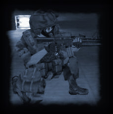
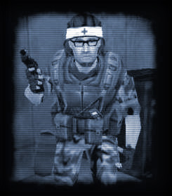
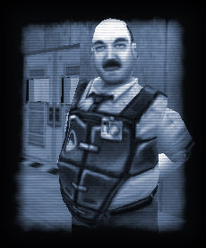
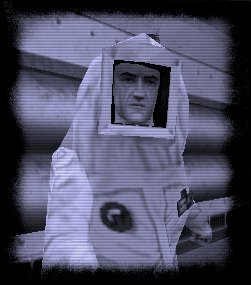

|
All friendly monsters will now follow the players in the same way Scientists and Barney does. Simply Use them once to make them follow you, then Use them again to make them stop following you.
All allies that are following you can now be given simple commands. You can set keys to these commands in the Control options.
Console Command
Description
npc_attackmytarget
The monster will attack the hostile you are currently targeting with your crosshair npc_return
The monster will try to return to where you are standing. npc_findcover
The monster will attempt to find cover from its enemy or try to find a safer position.
Friendly OP4 Grunts are dressed in jungle camouflage, and Hostile OP4 grunts are dressed in the standard urban camo. This is different from the setup in OP4, and has been changed to keep the same style as the standard grunts in Sven Co-op.
Just remember, green is good, white is bad.
Using your Grenade call ("Yell to warn other players" in the control options) will order any NPCs following you to find cover.
You can try binding your medic call and npc_return to the same button using this command:
bind h "medic; npc_return"
(where "h" is the key you wish to use). This will call any nearby medics to you, as well as bringing any allies that were following you to provide cover.
New NPC Descriptions
OP4 Grunt (Standard)Race: Human
Threat: N/A
Weapons: Assault Rifle; Shotgun; SAW (heavy machinegun); Grenades
Special Abilities: Can call for a Medic Grunt to heal him
Role: Assault
Only the Assault Rifle and Shotgun grunts can use grenades.
 OP4 Grunt (Medic) Race: Human
Threat: N/A
Weapons: Pistol; Desert Eagle
Special Abilities: Can heal players and monsters allied with him when needed
Role: Support
This soldier will attack nearby enemies, but his main role is to keep his squad (and you) healthy. He can provide an unlimited supply of medical attention whenever you need it.
Your Medic Call button serves a new function in 3.0. If you are near to an OP4 Medic Grunt and need healing, call out for a medic and the Medic will run over and heal you automatically as soon as he can.
If you have played OP4, its important to remember that in Sven Co-op you will need to use the medic call to get healed by the OP4 Medic Grunt. Set a key the the medic call in the Control Options. Walking up to the medic and Using him does not make him heal you.
 OP4 Grunt (Torch) Race: Human
Threat: N/A
Weapons: Desert Eagle
Special Abilities: Can burn his way through certain doors that block your path.
Role: Support
This guy can be useful, but it is a good idea to keep him away from combat. He carries a supply of pressurized gas on his back, and it doesn't mix well with bullets.
If you can't see a way through an area and you have a Torch Grunt in your party, you will most likely need to use him to burn through a door or the like.
Otis Race: Human
Threat: N/A
Weapon: Desert Eagle
Role: Security Guard
Otis is stronger and armed with a more powerful weapon than Barney
 Cleansuit Scientist Race: Human
Threat: N/A
Weapon: None
Role: Hazardous Environment Scientist
This scientist is immune to environmental damage such as radiation, fire and poison.
 Changes to Old NPCs
In Sven Co-op, Scientists can heal critically wounded players an unlimited number of times. They can also take control of player-controllable turrets, as can all other intelligent NPCs.
All NPCs have a wide variety of AI improvements and new abilities. For full information, see the features/changes list.
© 2003 Sven Co-op. All Rights Reserved.